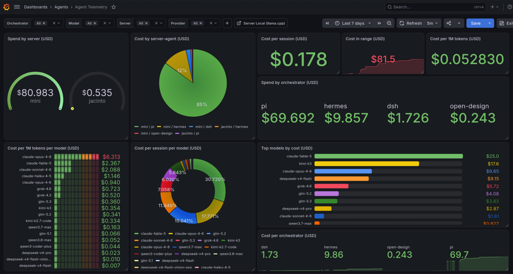
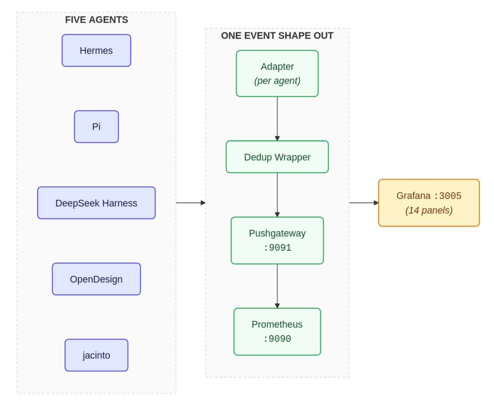
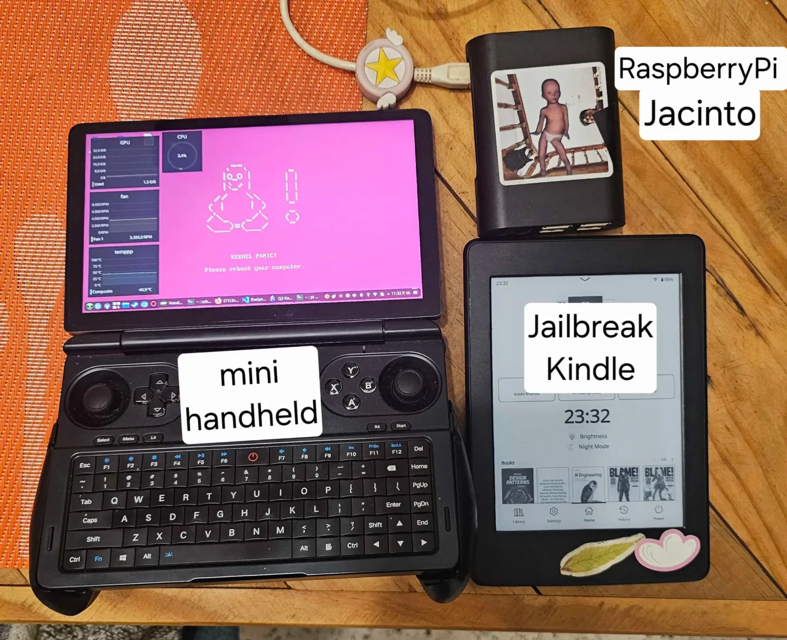

Aug 2026 · agent orchestration, LLM telemetry, observability
In the DivaBot post I argued that a model alone is not an assistant; it is a function you call, and the engineering around it is yours. Then I kept going and built an entire fleet.
Several agents across two machines, each from a different vendor, each with its own storage format. They run 24/7 and they do real work: code reviews, PRs, experiments, pentests, even this website.

I could tell you what my agents do. I could not tell you what they cost. So I built telemetry for them. Defense of this: it is not AI Psycosis, it is architecture.
The agents are heterogeneous on purpose, and they all have names: after the orchestrator started talking to me like Moria Casán, it began calling them "Divos". This is everyone:
They talk to different models and store their sessions in different formats (SQLite, JSONL, zstd-compressed JSONL), and none of them knows the others exist. Orchestration is a human job: I decide who does what, I review what comes back, and the agents get to merge their own PRs after I verify them.
That arrangement is great for reliability and terrible for visibility. Five agents, five billing surfaces, five stores. The only way to know the fleet was healthy was to build the layer none of them ships: a metrics pipeline with one adapter per agent.
Each agent has a small adapter that reads its own store and emits normalized events. Everything downstream (a dedup wrapper, the Pushgateway, Prometheus, Grafana) only speaks this one shape:

# one adapter per agent, same event shape out
{
"agent": "pi", # who ran
"session_id": "2026-08-21T…",
"model": "deepseek-v4-flash",
"tokens_in": 1200,
"tokens_out": 340,
"cost_usd": 0.0009, # estimated, off-peak prices
"task": "fix dedup bug",
}
A systemd timer wakes the sync every 15 minutes, runs the five adapters, and pushes totals to a Pushgateway. It is idempotent by design: a failed run spools its events and the next run drains them, so a crash never loses billing data.
The dashboard is nice. The bugs it caught are the reason it exists. Three, all real, all invisible without metrics:
A trailing slash zeroed 158 sessions. Hermes recorded DeepSeek
usage with a base URL ending in https://api.deepseek.com/v1/ with the
slash. The pricing matcher expected no slash. Every one of those sessions had its
tokens counted and its cost silently set to zero. Not a crash, not an error: a
quiet undercount. The fix was a local price table in the adapter, applied to any
row whose cost was cleanly zero.
Dedup was eating real money. The wrapper deduplicates events on (agent, session, model), but the Hermes adapter emitted one event per (agent, session, model, provider, task). Whenever a session had both a priced row and an estimated row, the whole event vanished, about $0.34 per sync, forever. The contract was ambiguous, so the pipeline lied in the least visible direction. Fix: one event per (session, model), merging rows, and a contract test that asserts zero duplicates.
Prometheus itself overcounts resets. A poisoned snapshot once
pushed a $1,252 spike, and increase() reads any reset as spend: it
painted a fake $64 day. The correct "spend in this range" for a cumulative gauge
is a delta against the start of the range, clamped so resets can never invent
money:
sum by (agent) (
clamp_min(
agent_cost_usd_total - (agent_cost_usd_total offset $__range),
0
)
)
All three bugs share a moral. The agent is not lying; it has no intention at all. The pipeline is what lies, and only verification catches it.
The engineering around your agents is the only part of the stack you actually own. The models will be replaced; the pipeline you build around them is what survives. If you run agents and you cannot tell me what they cost, you do not know your own stack.
